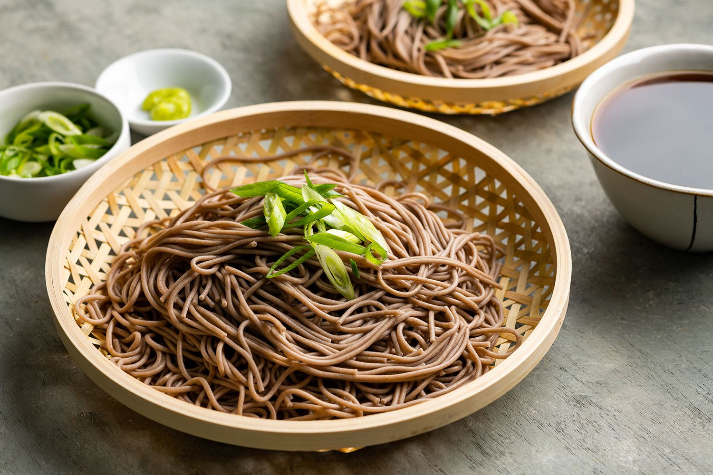

Soba
Soba

Description
This is how to make zaru soba, or cold soba. It is a popular dish in the summertime in Japan. Soba is both nutritious and delcious, and eating it cold provides some relief from the hot and humid summers.
I will briefly describe how I make this dish for myself.
Ingredients
- Uncooked soba
- めんつゆ
- Cold water and ice cubes
- Wasabi
Directions
- First, bring a pot of water to boil. It should be enough to completely submerge your soba.
- Next, you want to add your bundles of soba to the pot, and cook them simmering but not rolling boiling water for about 5 minutes.
- In a small bowl, prepare the tsuyu. It's two parts water to one part tsuyu.
- Add a small amount of wasabi to the tsuyu and break it up to try and dissolve it
- When the noodles are cooked, strain them and rinse them gently with cold water.
- Place the drained, cooled soba noodles in a shallow bowl or plate, and drop an ice cube or two into your tsuyu.
- Dip the noodles and enjoy!